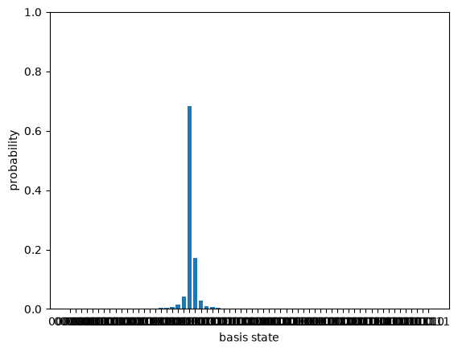

The last post built the Quantum Fourier Transform and promised it was a readout instrument. This post is the instrument. Phase estimation answers a specific question: given a unitary $U$ and one of its eigenstates $|\psi\rangle$, with
$$U|\psi\rangle = e^{2\pi i \varphi}|\psi\rangle,$$find the phase $\varphi$. That sounds narrow, but it is the workhorse under Shor’s factoring algorithm (the period of a number is an eigenphase) and under quantum chemistry (a molecule’s energy is an eigenphase). Build this and the capstone algorithms are mostly assembly.
import numpy as np
from qfs import gates
from qfs.statevector import StateVector
from qfs.dense import controlled_operator
from qfs.algorithms.qft import qft_matrix
from qfs.algorithms.phase_estimation import phase_estimation
from qfs import viz
def phase_gate(phi):
return np.array([[1, 0], [0, np.exp(2j * np.pi * phi)]], dtype=complex)
A ruler for the phase
The circuit uses two registers. A counting register of $t$ qubits is the ruler: it can represent phases to a resolution of $1/2^t$. The eigenstate register holds $|\psi\rangle$ and is never measured. The phase gate is the simplest test case: it is diagonal, $\mathrm{diag}(1, e^{2\pi i \varphi})$, and its eigenstate $|1\rangle$ has eigenvalue $e^{2\pi i \varphi}$. If $\varphi$ is a multiple of $1/2^t$, the ruler lands on it exactly.
for phi in (0.25, 0.5, 0.125, 0.375):
est = phase_estimation(phase_gate(phi), [0, 1], t=4, rng=np.random.default_rng(0))
print(f"true phi = {phi:<6} estimated = {est}")
true phi = 0.25 estimated = 0.25
true phi = 0.5 estimated = 0.5
true phi = 0.125 estimated = 0.125
true phi = 0.375 estimated = 0.375
The T gate is a phase gate with $\varphi = 1/8$, and three counting qubits read it off exactly, since $1/8 = 1/2^3$.
T = np.array([[1, 0], [0, np.exp(1j * np.pi / 4)]], dtype=complex)
phase_estimation(T, [0, 1], t=3, rng=np.random.default_rng(0))
0.125
What the circuit actually does
The three moves are: put the counting register in a uniform superposition with Hadamards; let counting qubit $j$ control $U$ raised to the $2^{,t-1-j}$ power, which kicks a phase $e^{2\pi i, 2^{,t-1-j}\varphi}$ back onto that qubit; then run the inverse QFT, which turns that pattern of phases into a number. The pattern of phases across the counting register is exactly the Fourier signature of $\varphi$, and the inverse QFT decodes it.
Let me open the algorithm up and look at the counting register’s probability
distribution just before the measurement. (This reruns the pipeline from
phase_estimation and stops one step early; it is here to see inside, not to
reimplement. The one new helper is controlled_operator(U, j, targets, n),
which builds the full n-qubit matrix that applies U to the targets register
when control qubit j is set.)
def counting_distribution(U, eigenstate, t):
"""Probabilities over the counting register just before measurement."""
eigenstate = np.asarray(eigenstate, dtype=complex)
m = int(round(np.log2(len(eigenstate))))
n = t + m
targets = list(range(t, n))
amps = np.zeros(2 ** n, dtype=complex)
amps[: len(eigenstate)] = eigenstate
sv = StateVector.from_amplitudes(amps)
for j in range(t):
sv.apply(gates.H, j)
for j in range(t):
u_power = np.linalg.matrix_power(U, 2 ** (t - 1 - j))
sv.amps = controlled_operator(u_power, j, targets, n) @ sv.amps
sv.amps = np.kron(qft_matrix(t).conj().T, np.eye(2 ** m)) @ sv.amps
return sv.probabilities().reshape(2 ** t, 2 ** m).sum(axis=1)
# An exact dyadic phase is a single spike: all the probability on one bin.
probs = counting_distribution(phase_gate(0.375), [0, 1], t=4)
print("phi = 0.375, t = 4: bin probabilities =", probs.round(3))
print("the spike is at bin", int(np.argmax(probs)), "=", np.argmax(probs) / 2 ** 4)
phi = 0.375, t = 4: bin probabilities = [0. 0. 0. 0. 0. 0. 1. 0. 0. 0. 0. 0. 0. 0. 0. 0.]
the spike is at bin 6 = 0.375
When $\varphi$ is an exact multiple of $1/2^t$, the interference is perfect: one bin gets all the probability and the measurement is deterministic. That is why the seed passed to the runs above never mattered: every seed lands in the same bin.
The honest case: a phase that does not fit the ruler
Most phases are not dyadic. Take $\varphi = 1/3$. No number of counting qubits represents it exactly, so the result is no longer a spike: it is a distribution, sharply peaked at the nearest bin, with small tails. Phase estimation gives you a sample from this, and the standard guarantee is that the nearest bin is by far the most likely outcome.
t = 6
probs = counting_distribution(phase_gate(1 / 3), [0, 1], t=t)
peak = int(np.argmax(probs))
print(f"phi = 1/3 = {1/3:.5f}, t = {t}")
print(f"peak at bin {peak} = {peak / 2**t:.5f} (nearest bin to 1/3)")
# wrap the distribution back into a StateVector (amplitudes = sqrt of the
# probabilities) so we can reuse the bar-chart view
sv_view = StateVector.from_amplitudes(np.sqrt(probs))
_ = viz.plot_probabilities(sv_view)
phi = 1/3 = 0.33333, t = 6
peak at bin 21 = 0.32812 (nearest bin to 1/3)

Widen the ruler from 6 counting qubits to 8 and the peak moves closer to the true $1/3$ and gets sharper. More qubits buy more precision, at the cost of a bigger register.
for t in (4, 6, 8):
probs = counting_distribution(phase_gate(1 / 3), [0, 1], t=t)
peak = int(np.argmax(probs))
print(f"t = {t}: peak bin {peak}/{2**t} = {peak / 2**t:.5f}, "
f"error from 1/3 = {abs(peak / 2**t - 1/3):.5f}, peak prob = {probs[peak]:.3f}")
t = 4: peak bin 5/16 = 0.31250, error from 1/3 = 0.02083, peak prob = 0.685
t = 6: peak bin 21/64 = 0.32812, error from 1/3 = 0.00521, peak prob = 0.684
t = 8: peak bin 85/256 = 0.33203, error from 1/3 = 0.00130, peak prob = 0.684
Where this leaves us
Phase estimation is the QFT turned into a measurement: prepare a uniform ruler, let the unitary write its eigenphase into the ruler’s relative phases, and run the inverse QFT to read the number out. Exact when the phase fits the register, a tight distribution when it does not.
The next post is the payoff. Shor’s algorithm factors an integer by finding the period of modular exponentiation, and that period is an eigenphase of the “multiply by $a$ modulo $N$” operator. So order finding is phase estimation on that operator, and the only genuinely new pieces are building that operator and a bit of classical number theory (continued fractions) to turn the measured phase back into the period. The quantum core is the instrument we just built.
Watch the Episode
This post is also a video episode: The Quantum Fourier Transform, part of the series playlist.
Discussion